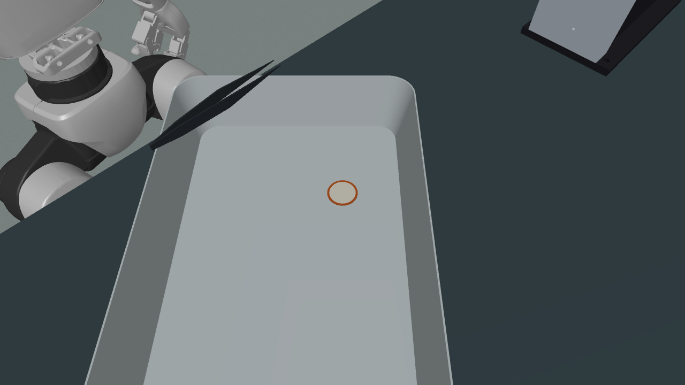
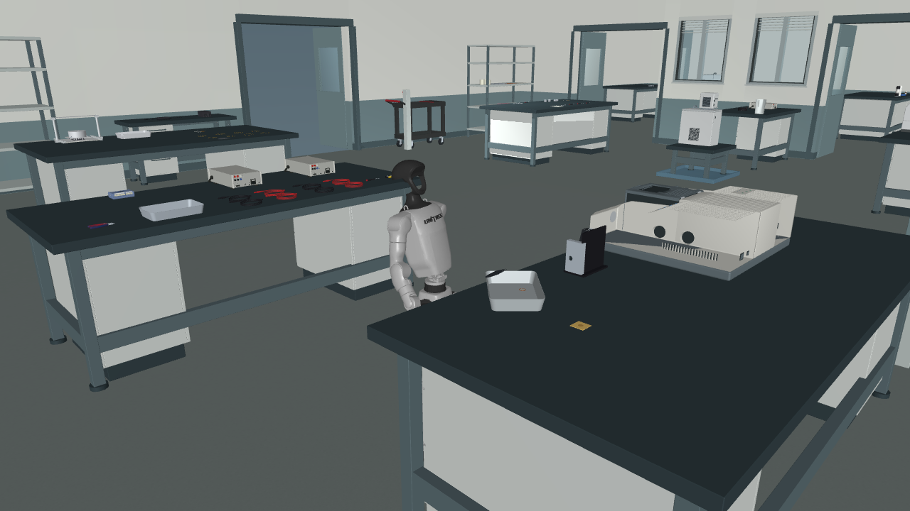
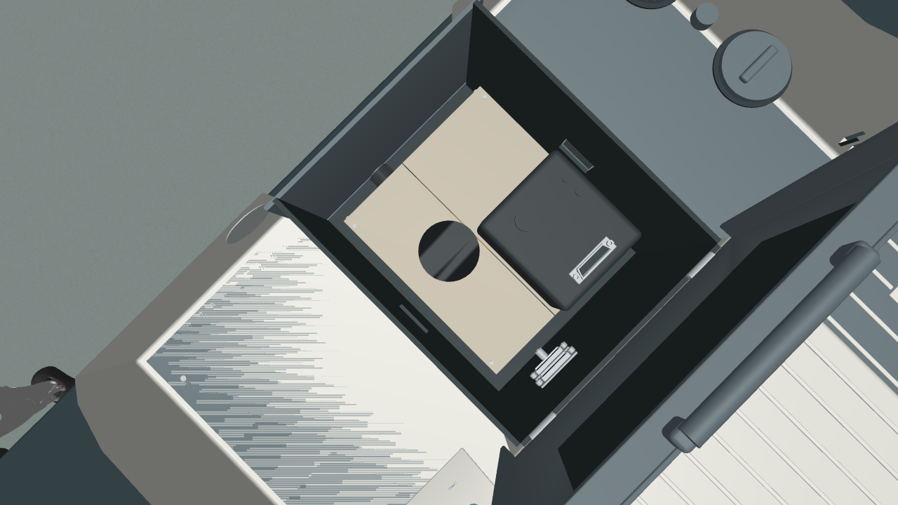
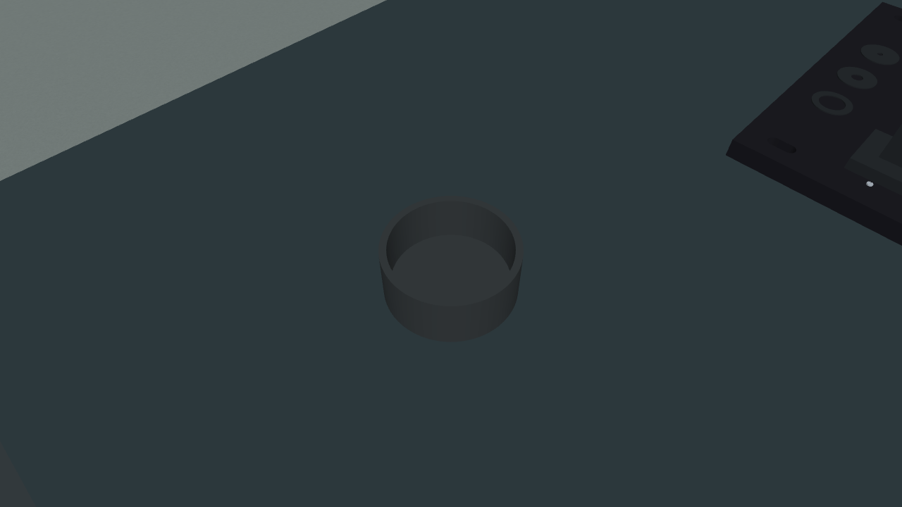

原实验室内的接触操作
视觉寻找与三指手拾取镊子
G1 / 宇树官方三指手 · 视觉定位、接近、夹持、提起、保持、放回、松手与撤离，59.09 秒连续仿真记录
本次单次试验通过 18 项独立物理检查、隔离控制器回放和电机限值检查。59,089 次控制输出和 17 帧头部 RGB-D 记录回放一致；工具实际抬高 25.08 毫米，无托盘支撑的夹持抬升持续 1.97 秒，随后放回、松手并撤离。
从声明的工位初始姿态开始。视觉用于初始定位，接近和夹持使用关节、IMU 与电机载荷估计反馈。尚未包含携物行走、使用镊子处理试样、完整实验分支和重复运行验收。当前完整论文分支通过数为 0/11。
携镊子往返与放回尝试：独立验收未通过
G1 / 宇树官方三指手 · 2 分 20 秒连续仿真记录，从视觉定位、抓取和抬升开始，经过携物去程、返程，再回到原托盘放回工具。
本次在松手阶段因残余手指载荷而停止。电机限值与控制器回放通过；独立物理验收有六项未通过：尝试完成、释放后的稳定支撑、路线完成、连续持物、机器人回位、抬升前预加载。控制器可重放不代表任务成功。携物技能和完整论文分支均未验收。
独立物理评估：正在读取处理结果。
加入光学样片后的镊子取放
同一完整实验室中，样片、金参考件和保护帽已作为自由物体接入。新一轮镊子取放运行完成 59.09 秒，录像由该次连续物理轨迹生成。
正在读取这次运行的独立评估。
这次录像尚未操作样片、参考件或保护帽。另一轮运行已完成四帧样片观测，但位置误差为 1.069 毫米，未通过 1 毫米要求；单帧定位检查不能替代运行中的定位验收。查看运行定位评估
后续加入静态地图校准的 5 秒观测试验，样片位置误差降至 0.249 毫米，并通过控制器回放。该试验仅验证初始定位；新的镊子取放运行已完成 59.610 秒，独立物理评估仍在处理。5 秒运行的定位评估 · 控制器回放
前两轮光学场景取放均未通过接触检查：样片落到托盘时的穿透超过操作运行的上限。设备支撑测试通过不能替代操作验收。首次降低初始高度的方案也因相交被拒绝，失败记录已保留。
按托盘实际坡面修正样片初始姿态后，完整的 3 秒支撑检查与独立速度重放均已通过；最大穿透为 14.3 微米，低于原定 20 微米操作上限。修正后的操作场景已准备并渲染，尚未执行样片操作。完整支撑检查 · 独立速度重放 · 新场景预览记录
镊子开合仍未通过：修正平衡求解后，第二次试验完成加力，但尖端间距仍为 1.40 毫米，重新张开时失去稳定抓握。下一轮正在验证先在托盘支撑下调整握持姿态。头部相机仍有手部遮挡，另已找到可改善视野的几何姿态候选，尚未完成物理执行。第二次开合评估 · 观察姿态筛选
59.610 秒运行的初始样片定位已通过 5 项检查，误差为 0.249 毫米。该评估未验证后续跟踪或样片操作。查看这次运行的定位结果
FTIR 样片与工位绑定
沿用原完整房间和 G1 / 宇树三指手。积分球采用已记录的仪器内初始安装配置；铜片与三层涂层组成独立自由刚体，涂层面朝上、铜背面接触原有普通托盘。

查看仪器内部与样片近景
开盖图是单独设置的几何检查姿态，不是机器人开盖记录。

样片在积分球原始面板上的五种放置位置均通过支撑检查。完整房间内另完成一次 3 秒托盘支撑检查：2 毫米释放高度，最大瞬时穿透 0.154 毫米，低于 0.25 毫米上限。该场景检查使用既有站立电机指令回放。
以上为资产与初始场景检查。安装尺寸、材料参数仍含明确记录的推断；参考件取放、样片翻面与装卸、设备接线和完整实验分支尚未完成验证。
金参考件与保护盖
参考件与保护盖已接入同一完整实验室，作为独立自由刚体参与接触计算。参考件补出了露出金色光学面的凹槽；保护盖保留开口和内腔。
组件的六种放置配置中五种通过。向一侧偏移 0.5 毫米的配置仍有过大接触力；零角度网格重合也有数值问题。当前采用绕光轴转过 1.875° 的初始配置，尚未完成全部放置姿态与机器人取放验收。
新的源表面碰撞实现已通过几何与法向核查，并通过全部六种组件配置。保留原桌面倒角的新版场景已通过三秒完整房间支撑检查及独立速度复核。执行环境已完成隔离加载与初始画面渲染；参考件和样片取放仍需机器人执行验证。
新版完整实验室与当前初始工位

这是已准备的初始状态。物体安装与摆放尚未获得机器人操作完成记录。
完整房间初始支撑：正在读取评估记录。
查看参考件工位、保护盖与完整房间
以下是初始配置与单独开盖检查图，不代表机器人已执行这些操作。



连续行走接近与滑窗操作
G1 / Inspire 双手 · 沿通道接近 FTIR 工位、推动滑窗、撤手并用视觉确认开口
正在读取连续接近记录…
本次是一次连续的局部行走与设备操作，尚未包含工具拾取、携物转移、完整实验分支和重复运行验收。
托盘与工具搬运
G1 / Inspire 双手 · 托盘抓取、放置、重新观察、再次抓取与返回
正在读取运行记录…
这一段记录原白色装置工位上的托盘操作。刮勺在开始时已放入托盘；其他设备保持初始位置。这是完整实验室中的接触子任务，还未覆盖跨工位行走、装配、接线和论文全部分支。
查看同步头部深度记录
颜色使用固定距离标尺，播放时间与主录像同步。
通道行走与停稳
G1 携带自身灵巧手，在原实验室通道中空手行走，然后切换到站立控制。
正在读取行走记录…
这一段尚未与上方托盘任务串联。路线采用预设速度时序与 IMU 航向纠偏，尚未覆盖目标工位导航、携物行走和重复运行验收。